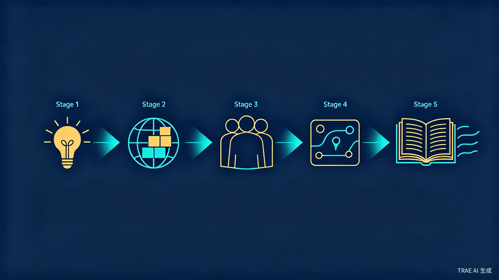
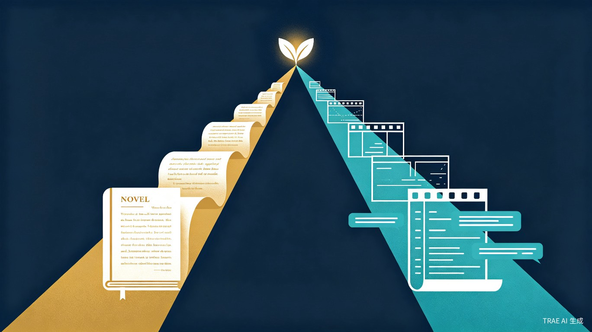

Babel Library
一句话，全自动，生成一部长篇小说或影视剧本。
你只需要输入一个故事创意，系统自动完成从世界观构建到逐章写作的全部流程。
巴别图书馆是一个全自动 AI 长篇创作系统。用户只需输入一句话故事种子，系统全自动串行完成世界观构建、角色设计、大纲规划、逐章写作的全部流程，最终输出一部完整的 300 万字长篇小说或一整套影视剧本。全程无需人工干预。
"如果有一座图书馆包含所有可能的书籍，那其中一定有一本是你正在寻找的故事。我们要做的，就是让 AI 帮你找到它。"
写一部长篇小说或影视剧本，人类需要数月甚至数年。写到后期，角色性格前后矛盾、伏笔埋了忘记收、人物关系纠缠不清——全靠作者的记忆力和经验硬扛，稍有疏忽整部作品就崩了。现有的 AI 写作工具最多帮你润色一段话、续写几百字，从没谁能做到"你给一句话，它还你一本书"。大语言模型已经具备了理解长程因果、维持角色连贯性的能力，这件事现在是可行的。
整个创作过程分为五个阶段，严格串行执行。每一步都基于前一步的结果继续推进，AI 自动"记住"之前所有的设定，确保从头到尾的一致性。
用户输入一句话创意（如"一个失忆的魔法师在现代都市中寻找自己身份的故事"），AI 将其扩展为结构化的故事种子，明确核心冲突、主题方向和基本设定。
基于故事种子，AI 自动构建完整的世界观体系，包括宇宙法则、历史事件、地理环境、文化习俗、组织势力、宗教信仰、重要物品七大类世界设定。
AI 根据世界观和故事需求，自动创建完整的人物体系——主角、配角、反派、各类NPC，并为每个人物赋予性格、背景、动机和人物关系网络。
AI 将整个故事拆分为卷和章节，为每一卷、每一章规划具体的情节点、场景安排、角色出场和伏笔线索，形成完整的故事蓝图。
AI 依据大纲逐章生成正文。每一章的写作都会参考完整的世界观、角色设定、前文内容和后续预告，确保风格统一、情节连贯、伏笔收束。

系统包含两个创作子系统，共享相同的世界观和角色基础，但各自拥有独立的创作流程和输出格式。
输出完整的小说散文文本，按卷/章结构组织。18 小时全自动完成一部 300 万字长篇小说，风格统一、情节连贯。
输出标准剧本格式，按集/场/景结构组织。包含场景描述、角色对白和动作指示，数小时内完成一整套影视剧本。

所有修改、补全、风格调整都通过自然语言对话完成。比如你可以说"让这个角色更冷酷一些"或"加强这一章的紧张感"，AI 会理解你的意图并结合完整上下文自动执行。不需要填写复杂的表单，也不需要懂任何技术。
快速验证故事创意，一天之内拿到完整作品。不再为写到几十万字后角色崩坏而头疼。
从零构建完整世界观和角色体系，快速产出剧本初稿，再由人工精修。
批量生产可版权化的长篇内容，在小说、影视、游戏、漫画之间快速打通。
获得结构化的角色和世界观数据，直接作为游戏设计的基础素材使用。
| 对比维度 | 现有 AI 写作工具 | 巴别图书馆 |
|---|---|---|
| 生成范围 | 短片段辅助写作 | 从种子到完稿的全流程 |
| 用户输入 | 需要逐步引导和大量人工操作 | 一句话，全自动完成 |
| 长篇一致性 | 无保障，依赖人类记忆 | 系统自动维持因果和角色连贯 |
| 世界观管理 | 无结构化支持 | 七大类世界设定自动构建与管理 |
| 角色体系 | 无系统化支持 | 五类角色 + 人物关系网络自动生成 |
| IP 复用 | 不支持 | 结构化数据可直接导出复用 |
| 剧本支持 | 不支持或仅基础功能 | 独立剧本子系统，完整剧本格式 |
将 300 万字长篇小说的产出从"人类数月"压缩到"18 小时全自动完成"。影视剧本同理，从数周压缩到数小时。用户只需要一句话，剩下的全部交给系统。
因果一致性和角色连贯性由系统自动保障，不再依赖人类记忆。写到第 300 章时，AI 依然"记得"第 1 章埋下的伏笔。
小说和剧本双线产出，覆盖文学和影视两大市场。所有创作数据（角色、世界观、关系图谱）都是结构化的，可直接复用到游戏、漫画等二次开发，实现"一次生成、多端变现"。
极低的创作门槛让任何人都能产出可版权化的长篇内容。有故事创意就够了一句话输入，系统帮你完成剩下的全部工作。
巴别图书馆不是停留在纸面上的创意。附件中的 zip 文件包含一部由系统实际全自动生成的完整长篇小说。
用《西游记》的叙事内核，讲述美国西部淘金热时代原住民与资本博弈的严肃长篇小说——总计 300 万字，一句话输入，一次性全自动生成，18 小时完成。
这部作品证明了巴别图书馆系统的核心能力：一句话全自动生成超长篇严肃文学。系统自动构建了完整的淘金热时代世界观、数十个性格各异的角色、跨越数百章的复杂情节线，并从头到尾维持了叙事风格和因果逻辑的一致性。
实现小说到剧本、剧本到漫画、漫画到游戏的自动转换，一次创作、全端覆盖。
构建个人化的 AI 创作助手，持续学习用户的风格偏好，越用越懂你。
从创作到发布到变现的完整内容生态，让每个好故事都能找到它的读者。